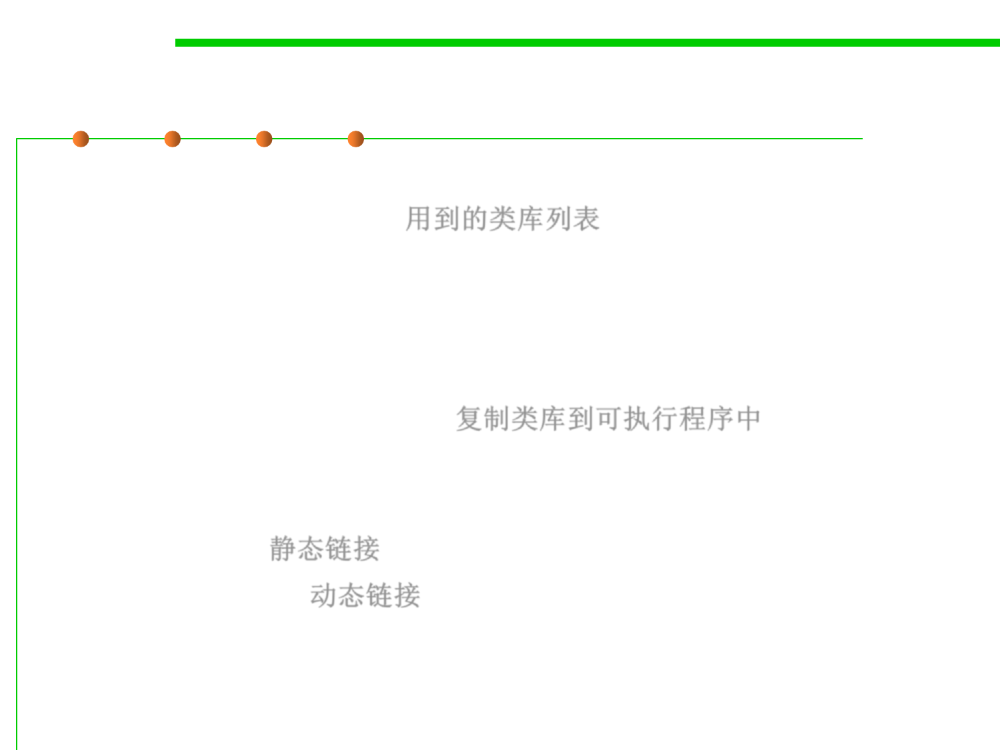

1.1 Multi-Dimensional Views of Software Construction
Linking with a library
▪ When a program is edited, built and installed, a list of libraries to
search must be provided. 用到的类库列表
▪ If a function is referenced in the source code but the developer
didn’t explicitly write it, the list of libraries is searched to locate
the required function.
▪ When the function is found, the appropriate object file is copied
into the executable program. 复制类库到可执行程序中
▪ Two different approaches of integrating a library into an
executable program:
– Static linking 静态链接
– Dynamic linking 动态链接